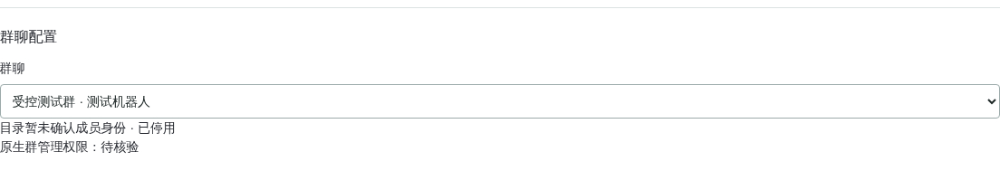
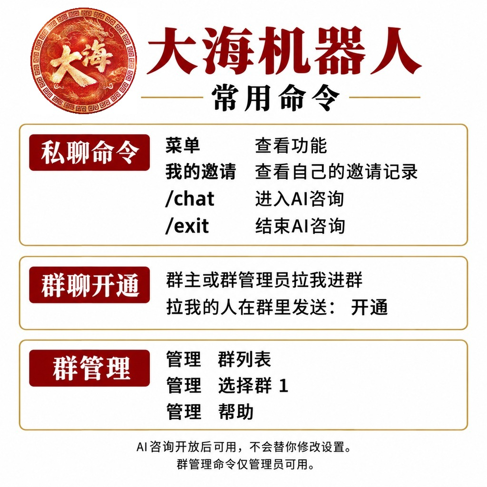

Synchronized October 20, 2026 (Beijing time). Tool capabilities, dated observations and outstanding acceptance are separate. Later checks do not rewrite the original October 15, 16 or 19 evidence.
The owner reports code loaded after the 20:02:56 Beijing-time full restart, October 23, 2026 (PID3317496, NRestarts=0). Online duration configuration passed from41,760 to60 and back to41,760 minutes at20:10:45, with previews not writing. No new actual rejoin/mute acceptance was performed. Offline regression and configuration readback do not prove native sanctions. The three concurrency fixes are verified: old notices cannot use new durations, the final synchronous permission fence, and proven-unsent classification; genuine unknowns remain preserved without retry. The following is the contract checklist, not a claim that every item passed live; image/phone evidence remains separately dated:
黑名单禁言时长 N分钟 / 黑名单禁言时长 N小时 / 黑名单禁言时长 N天.确认黑名单 token. Dashboard Group Management → Rules → Blacklist Settings (群管理 → 规则 → 黑名单设置) also requires preview confirmation; cancellation, revocation, group/revision changes and expiry reject old tokens.广告图片 PLAN_INDEX for scheduled images only; integration/phone evidence is separate from generated tutorials/PDFs.Rules and AI ownership provides workflows and concrete recovery steps. The first two online reads were protective409 refusals because the receiver was a member, without writes. Receiver43506527's temporary native-admin grant was revoked and verified at20:11:18, with refresh complete at20:11:22; 31846829 remained owner and23691273 was not enabled. No new kicks or actual mutes occurred. The20:24:00 protection review matched other protected surfaces and retained test tenant217→220 plus audited concurrent Dingfeng1459534 dashboard versions4/5. Raw tenants hashes differ; the audit chains were reconstructed in memory and formal concurrent changes were neither overwritten nor rolled back. This is not a claim that formal groups never changed. This documentation update performs no production operations; guide/index/PDF regeneration does not synchronize dist.
Old → new: three successful rejoin kicks then fixed 29-day mutes → direct, configurable muting from the first actual rejoin. The historical three-kick test keeps its date and original results. The user's “看得见” confirms the corresponding phone display only, not new-policy acceptance or that future actual expiry occurred. See the maintenance record for exact regression counts, permission-message reload and protection evidence. Offline/static outputs do not establish new native-sanction acceptance; historical evidence below is unchanged.
After the user connected all three accounts, owner 31846829, receiver 43506527 and
sender 23691273 reused their existing native connections in test group 1459282.
test_advertising verified three real warnings across two independent fixtures
containing one and two warnings, not full first/second/third escalation in one fixture.
Authoritative native userNick supplied @大蛤 with the verified target;
groupMemberNick=testfork was not preferred. Independent peer records confirmed
original-message recalls and warning delivery/self-recalls, with authors/operators
matched against local receipts. Warning acceptance-to-recall notifications took
12.112/12.115/12.125 seconds, not measured phone disappearance.
Rules and the receiver's temporary native-administrator role were restored to the
original member role; windows closed. Formal groups, finances and normal punishment
counts were unchanged, while native receipts/minimal audit were retained.
The live test used zero model calls, no extra NIM connection and no service restart.
Mute escalation, full functionality and phone rendering were outside its scope.
The initial verifier mistook a SHA-256 fingerprint for JSON; the first warning was
recovered read-only without resending, preserving failed-run evidence.
Evidence: /opt/backups/wsl-warning-live-20261020-I5Z5qf/result.json.
Later documentation/source cleanup does not rerun these native operations or rewrite
the earlier observations below.
Current invitation attribution is verified against the successful signed business application record, bound to the invitation ID, recipient, group and inviter. A real rejoin exposed an NIM query returning the old inviter. Such conflicts are recorded separately as failed SDK attribution, never used to assign ownership. Open-service activation already uses business invitation records. This test tool does not change production cashback attribution or historical financial entries.
Current-member queries now verify the latest signed membership event, including departure and natural-join barriers. Pending, rejected, equal-time conflicting or identity-mismatched records cannot reuse an old inviter. NIM is diagnostic only; insufficient current evidence remains unattributed rather than guessing an owner.
The controlled invite/remove/accept, native-admin grant/revoke and owner-transfer workflows described here are local CLI only; they add no production plugin entry point. Friendship deletion is absent from both environments.
check_wsl_pair_live.py separates retired chat sanctions from its local native
test primitive. The manual phase first asserts that the retired chat mute is
rejected without creating an operation, then uses Pair.test_native to verify
the native mute/unmute effect. Only DaHa 43506527, group 1459282 and ordinary
fixture 23691273 are permitted. It uses the normal durable executor and guards,
with at least 3.2 seconds between HTTP completions and 30 seconds between actions.
Advertisement/flood cleanup and group mute/unmute use the same local primitive.
No public endpoint, chat command, AI or MCP entry point is restored.
On October 16, 2026, 10 new tests and 58 existing related tests passed, 68 total.
At that date, the corresponding real runs were still pending; offline success
does not prove native sanctions or restoration. The separately dated October 19
advertising, mute-expiration and recovery checks below cover only their stated scope.
--group. Existing test group 1459282 is not a fresh first-invitation group.
Formal groups 1516387 and 1488006, and any group with financial rules or
ledger entries, are denied regardless of test flags.31846829 performs invite and remove, with
test bot 43506527 as the sole target. Only that recipient performs accept.
Owners, humans, arbitrary accounts and batches cannot replace the target.grant and revoke actions are strictly limited to test group 1459282,
with native owner LinXi (31846829) acting on test bot DaHa (43506527).
grant requires MEMBER to ADMIN; revoke requires ADMIN to MEMBER.
A mismatched role blocks the action. These actions cannot transfer ownership,
change other members' roles or extend to a fresh first-invitation group.transfer-owner and restore-owner actions exchange native
ownership only between LinXi and DaHa in1459282. They are not administrator-grant
aliases and expose no chat, dashboard or AI control. Only the current verified
owner may submit; an ordinary member cannot promote itself.23691273 is the only optional extra roster member; it
is not an invitation actor or an alternative target. Other members, mismatched
identities or unexpected native roles block the operation.23691273. Under current
admission policy this is a rejection case, not successful activation evidence.
Production activation still requires a real native owner/admin inviter, current
roster and successful business invitation evidence, then 开通 from the inviter.accept uses only the unique, fresh signed applyId belonging to the same
durable invitation intent. Group, recipient, actual inviter, time and pending
state must match. Arbitrary invitation IDs, other groups and resent invitations
are not supported; missing, stale or conflicting evidence blocks the action.The actual inviter must be a current native owner/admin in the complete signed business roster. Owners, approvers, notification senders and stale NIM inviter queries cannot substitute for a successful business invitation record. An ordinary inviter triggers suspension and one durably reserved self-exit request. Unknown results are not retried. Failed reads and directory absence alone never trigger data deletion.
Unknown invitation sources, incomplete rosters and identity conflicts remain disabled. Activation codes do not bypass native inviter-role verification. Unproven historical membership requires control-plane review rather than claiming ownership with a code.
Losing native admin rights retains configuration, managers and data while suspending sanctions and affected schedules. Regaining rights resumes future operations only, never old pending sanctions.
Working-data cleanup requires a native self-departure notification corroborated by signed directory absence, or an accepted self-exit receipt and directory absence. Cleanup is limited to the exact robot account/group: rules, violation counters, pending tasks, group message bodies and old confirmations/codes. Original manager ownership, minimal audit, deduplication IDs and uncertain-operation receipts remain. Financial entries, attribution, amounts and unpaid balances are never deleted. Other groups and robot accounts are unaffected.
Unresolved departure fences and interrupted cleanup survive restart. Rediscovery cannot reopen an unfinished cleanup. Delayed departure events are checked against newer membership evidence before clearing a subsequently rejoined group.
The group selector and status area distinguish pending verification, missing native rights, self-exit receipts and cleanup progress. Account and group labels in this screenshot are redacted; it is not evidence of real invitation acceptance.

A group owner or native administrator invites the bot, then the inviter sends
开通 in that group. Unopened groups receive the outcome of this specific command
without prior private chat or a proactive-send grant. Once the bot has left, it
cannot receive commands there; an owner or administrator must invite it again.
Plain-language replies do not relax identity, invitation or suspension checks.
After a first confirmed friend acceptance, the bot privately sends its text menu
and the generated menu image containing the supplied Da Hai logo. Automatic and
mobile manual acceptance are supported, with a persistent marker keyed by account
and real transport sender. Existing friends are baselined without bulk welcomes.
Re-addition, restart and first unmatched private messages share the same marker.
Unknown text delivery neither sends an image nor retries; 菜单 remains available.
Approvals remain single-action with a 30-second minimum interval; welcome messages
remain at least three seconds apart. Welcome observation never resumes paused
approvals, and friend deletion remains absent from dashboard, chat and AI.

The internal dashboard allowlist action test_advertising binds an existing short
test window. It is not a chat command and accepts no path, target, arbitrary method
or role change. Only group1459282 with LinXi as native owner, DaHa as native admin
and23691273 as ordinary member is eligible; the complete roster must contain
exactly those three accounts. Existing role-change budgets and pacing still apply.
Insufficient budget needs separate approval, never an automatic increase.
The original window must contain only group_rules, last at most300 seconds,
and admit exactly six messages bearing one unique marker. The server fixes storage
at test-advertising/<unique-marker>/moderation.sqlite3, isolating only this run's
warning and escalation counts without resetting or rewriting existing sanctions.
Actual ingress, rules, native authorization, recall and mute use the original
execution chain. Native operation receipts stay in their original action ledger.
Uncertain outcomes remain reserved, never inferred as unsent from an empty test
ledger and never automatically replayed.
Closing, expiring or replacing the window, changing identities, group settings or manager authority stops unsubmitted work. Completed receipts still persist in the originally bound test ledger without falling back to production counters. Offline regression is not platform or mobile acceptance. Real evidence must cover three recall warnings,5/15/60-minute escalation, peer recall notices, mute effects and final unmute restoration. Close the window, restore rules and native roles, and verify unchanged formal-group switches and financial fields afterward.
On October19 Beijing time (October18 UTC), explicit approval covered a maintenance restart and a second fixed grant/revoke pair. Six real messages in1459282 verified:
Protected server evidence is at /opt/backups/wsl-advertising-live-20261019/,
including verification.json, recovery-verification.json, independent incoming
and recall receipts, pytest.xml, and before/after financial audits. This accepts
only automatic advertising progression and restoration, not first activation,
every feature, production gray rollout, or a new mobile-screen confirmation.
For root-run CLIs, prefix every command below with
ASTRBOT_DISABLE_FILE_LOGGING=1. It disables only initial local CLI file sinks,
not the running service's logs. These tools do not stop or restart services.
The following is the controlled workflow for the separate local CLI
scripts.wsl_test_lab, not a claim of completed acceptance. An authorized operator
must supply the group ID. Preview reads authenticated platform state and records
a local preview without submitting a platform mutation; it is not an offline run.
Preview one selected action:
env ASTRBOT_DISABLE_FILE_LOGGING=1 .venv/bin/python -m scripts.wsl_test_lab --group <testgroup> --action invite
Removal and invitation acceptance each require their own preview, not a full-cycle execution:
env ASTRBOT_DISABLE_FILE_LOGGING=1 .venv/bin/python -m scripts.wsl_test_lab --group <testgroup> --action remove
env ASTRBOT_DISABLE_FILE_LOGGING=1 .venv/bin/python -m scripts.wsl_test_lab --group <testgroup> --action accept
Preview displays a preview ID and a one-use confirmation secret valid for ten
minutes. The separate journal at /opt/backups/wsl-test-lab/control.sqlite3 stores
only the secret's hash, not its plaintext. Review the action, group, actor, sole
target, roster and protection fingerprint before applying that preview:
env ASTRBOT_DISABLE_FILE_LOGGING=1 .venv/bin/python -m scripts.wsl_test_lab --group <testgroup> --apply --preview <preview-id>
Enter the confirmation through the hidden getpass prompt, never through command
arguments, scripts or logs. Do not repeat --action or --first with --apply;
the preview already binds the action and scope. Expired, consumed or stale previews
cannot execute.
For an uncertain outcome, reconcile only the existing attempt:
env ASTRBOT_DISABLE_FILE_LOGGING=1 .venv/bin/python -m scripts.wsl_test_lab --group <testgroup> --reconcile <attempt-id>
The attempt ID is the registered preview ID. --reconcile reads authenticated
evidence for that existing operation and updates only the separate local journal;
it does not submit another platform mutation and is not combined with --apply.
For a fresh first-invitation path, the native owner must create the controlled group in the official client and provide its ID before previewing:
env ASTRBOT_DISABLE_FILE_LOGGING=1 .venv/bin/python -m scripts.wsl_test_lab --group <fresh-testgroup> --action invite --first
--first applies only to invitations. It does not require a preceding removal,
and it never deletes historical authorization, tenants or audit to manufacture a
first activation. In addition to local onboarding/audit and retired-group records,
the tool checks the latest application/invitation logs currently returned for
recipient business account 43506527. A historical record for that group and
recipient blocks this path. No match in the returned logs does not prove the
provider's entire history is empty, and an existing group cannot masquerade as
fresh. Without a suitable new group, stop and keep the acceptance gap open.
No reliable create-group or add-friend request schema has been verified, so the
tool does not guess or invent those requests.
An invitation or membership result of verified proves only that operation's
corroborated outcome. It does not establish first activation, default rules,
native permissions or all subsequent features. Full first activation still needs
independent evidence of the real invitation source, native roles, the 开通
outcome and subsequent behavior; an invitation alone is insufficient.
On October 16, 2026, the user explicitly approved resetting existing controlled
group 1459282 as a substitute for testing post-reset activation. This exception
is not normal removal/rejoin behavior and does not prove a genuinely new group.
Every result must retain reset_existing_group=true and
genuinely_new_group=false. Never use --first to disguise this history.
Invitation source, current native roles, the inviter's 开通 command, bot
privileges and subsequent behavior still require separate evidence.
scripts/reset_wsl_test_group.py is a separate local-only utility pinned to bot
DaHa 43506527, group 1459282 and manager LinXi 31846829. Its default is a
read-only preview, with no HTTP, chat, AI or MCP entry point. It verifies current
instance/account-directory bindings, both accounts' group transport binding and
trusted identity records. Exact business account/group namespaces are mandatory;
a bare transport group number is never a cleanup predicate.
Financial configuration/history, model charges or activity reward entries for
this group refuse the reset.
First complete and verify a real removal through TestLab, then wait for persisted departure confirmation and completed lifecycle cleanup. Applying requires both AstrBot and the separate cashier service to be stopped, with no remaining database holders or queued service start. Disabling only the plugin is insufficient because adapter polls and caches may remain active. The shared-process maintenance window affects other platforms and must be scheduled by the operator. This tool neither stops/restarts services nor calls upstream APIs.
systemctl stop wangshangliao-cashier.service
systemctl stop astrbot.service
env ASTRBOT_DISABLE_FILE_LOGGING=1 .venv/bin/python -m scripts.reset_wsl_test_group
env ASTRBOT_DISABLE_FILE_LOGGING=1 .venv/bin/python -m scripts.reset_wsl_test_group \
--apply --format-version 1 \
--confirmation-sha256 <just-reviewed-preview-digest> \
--output /opt/backups/<new-private-backup-directory>
The confirmation binds tenant version/epoch, instance/storage routing, schema and row fingerprints, configuration and the existing reset audit chain. Any change requires a fresh preview. SQLite writer locks protect consistent backup-API snapshots before mutations. Expected complete row state, integrity and foreign keys are checked before commits; tenant authorization is removed last. Root-owned private archives and read-only receipts cannot be rewritten by the application owner. An append-only, hash-chained database receipt is also added; this is not a tamper-proof guarantee against a root operator.
Financial ledgers, formal groups, LinXi's same-group state, original audits,
retired markers, deduplication and uncertain-action receipts remain. Their
retention does not mean working state failed to reset. Inspect completion.json
after interruption: incomplete_keep_services_stopped requires manual review,
not an automatic snapshot restore or blind rerun. After success, the operator
restores services and separately previews invitation, acceptance and native roles.
The actual reset receipt is
/opt/backups/wsl-test-reset-20261016/completion.json, with reset_complete;
real removal evidence is
/opt/backups/wsl-release-20261016-before/reset-membership.json.
All 1468 financial entries and protected digest 88566f7c… were preserved,
formal groups stayed paused and LinXi's same-group state remained. Reinvitation
has been accepted; this reset receipt does not establish activation or subsequent
acceptance. The reset-specific suite passed 21 tests and the subsequent full
regression passed 4267 with zero skips. These are version-specific regressions,
not complete real-platform acceptance.
A later preflight exposed three departure_verified notices incorrectly removed
by that reset. First observation arrived 232 seconds after the real invitation,
so the test was refused before disabling or sending. The reset plan now preserves
these original rows and reports preserved_departure_fences; they are security
generation barriers, not ordinary disposable working data.
During a stopped-service maintenance window, the main operator restored the three
exact business rows from the consistent original backup. Evidence is
/opt/backups/wsl-release-20261016-before/fence-recovery.json.
Other table hashes, finances, formal groups and configuration were unchanged;
integrity and foreign-key checks passed. The new join notice's SQLite rowid was
not overwritten and old authorization was not restored.
The activation utility now uses the production predicate: latest verified
kick/leave for the exact account/team not later than this membership's first
observation. Only when absent does it use joined-120; an invitation must still
postdate the authorized reset. A background-verified candidate does not bypass
identity, invitation or version checks. The two corrected utilities passed 61
focused tests with zero skips; actual activation still needs separate evidence.
If LinXi's own tenant is inactive, do not reuse an ordinary-member sender while
claiming to be LinXi. Local scripts/check_wsl_test_activation_live.py pins the
three identities and test group above. Default execution prints the plan; an
operator reviews before --apply. Completed reset, current successful invitation,
native roles, Vault identities, finances and formal-group guards are rechecked.
Only LinXi's adapter is temporarily disabled through the authenticated existing
dashboard. The completed request, stopped runtime and this operation's post-NIM-
close AstrBot diagnostic are all required before using LinXi's saved NIM session
to send exactly one real-owner 开通. No business login, direct authorization
write, runtime proxy or sender impersonation is available.
The utility shares TestLab's lock and persistent completion-based pacing of at least three seconds. Durable intent precedes submission; unknown results and prior attempts never resend automatically. Temporary NIM closure precedes restoring the original flag. Original configuration digest, other platform states and protected data must match afterward. Benign display/refresh metadata does not invalidate authority checks, but versions, membership and grants remain frozen. Unproven closure or concurrent configuration changes require manual recovery without blind overwrites. Acceptance requires actual DaHa activation for LinXi and the missing-native-admin warning while DaHa remains a member. The utility grants no native role and retains the existing-group reset flags.
env ASTRBOT_DISABLE_FILE_LOGGING=1 .venv/bin/python -m scripts.check_wsl_test_activation_live
# Review scope and stop other live test drivers before applying.
env ASTRBOT_DISABLE_FILE_LOGGING=1 .venv/bin/python -m scripts.check_wsl_test_activation_live --apply
An October 16, 2026 live attempt stopped at shutdown verification: systemd encoded
ANSI-bearing MESSAGE as a byte array, which the old parser did not decode.
The original attempt remains not_sent / verified with an empty sender outbox;
no activation message was sent. Strict UTF-8 byte-array decoding and ANSI removal
now preserve the original instance and post-disable timestamp checks.
After manual review, recovery may explicitly name only the latest proven-unsent,
fully restored attempt:
env ASTRBOT_DISABLE_FILE_LOGGING=1 .venv/bin/python -m scripts.check_wsl_test_activation_live \
--apply --retry-not-sent <reviewed-full-previous-attempt-sha256>
Recovery rechecks current invitation, roster, membership generation and protected
state, plus the original private receipt and empty outbox. It preserves the
original row/receipt and creates a linked new attempt and durable recovery proof.
Any submitted, unknown, rejected or un-restored historical attempt, or any
existing outbox intent, forbids replay. Never clear the journal, switch directories
or reset unknown states to bypass these guards. Without --apply, it still only
prints the plan. The corrected activation/reset suites passed 88 tests; read-only
review of the actual files confirmed shutdown decoding and recovery proof, not a
successful subsequent live activation.
For root-run CLIs that may import AstrBot, prefix every preview, live test and
offline regression with env ASTRBOT_DISABLE_FILE_LOGGING=1. This disables only
the CLI's initial file sinks; it retains the same AstrBot logger and console
output. It does not change the running service's logging, configuration or
budgets. Do not set it globally or in systemd service configuration.
On October 16, 2026, root-run tests created application log files including
data/logs/astrbot.trace.log, causing repeated service startup failures with
PermissionError. The main operator repaired only the two root-owned test log
files to owner astrbot, mode0600; all platforms subsequently returned online.
Original logs and failure history remain. Soak checks capture the initial
NRestarts and assert no increment during observation, rather than resetting the
failure counter to claim zero restarts. Keep pre-repair and post-repair observation
evidence separate.
grant and revoke are local isolated test actions with native routes verified
against the official APK. The controlled recheck above includes live grant and
restoration evidence; route verification alone still does not prove execution.
Preview only this fixed test scope:
env ASTRBOT_DISABLE_FILE_LOGGING=1 .venv/bin/python -m scripts.wsl_test_lab --group 1459282 --action grant
env ASTRBOT_DISABLE_FILE_LOGGING=1 .venv/bin/python -m scripts.wsl_test_lab --group 1459282 --action revoke
These are independent previews with different current-role requirements, not a
script to run consecutively. The complete authenticated roster must confirm that
LinXi remains the native owner and DaHa is present with the role required by the
selected action. These role actions require exactly all three fixed accounts;
23691273 must retain its ordinary-member role. Verify accounts and NIM pins
against the fixed Vault identities, never display names.
Each action uses the separate preview, ten-minute one-use secret, hidden getpass
confirmation and single --apply --preview workflow above. The same local journal
lock, completion-based pacing, daily budget and unknown-outcome no-replay fences
apply. After a receipt, read the authenticated roster to confirm the target role
and that other members are unchanged. Native admin status is not plugin management
authorization and does not change production request whitelists or chat commands.
Record the original target role before starting and restore it at the end, then
verify again. Normally this is MEMBER, followed by grant to ADMIN, then a
separately previewed and confirmed revoke back to MEMBER. If testing revocation
from an original ADMIN role, separately preview and confirm grant to restore
ADMIN. Restoration consumes write budget and follows the same pacing; it does
not bypass safeguards. Reconcile an unknown outcome before any further action,
without blind inverse requests or replay. If restoration cannot be proven, record
the test as incomplete rather than passed. Restoring the role neither replays old
sanctions nor deletes or resets historical management authorization.
Each new run still requires its own live evidence rather than reusing the controlled recheck above. Native acknowledgments and observed roster roles do not replace visible evidence from the phone client.
Moderation and activity acceptance normally needs only administrator access:
use grant, not ownership transfer. For explicit owner-transfer testing, preview
the following separately; these commands are not a consecutive execution script:
env ASTRBOT_DISABLE_FILE_LOGGING=1 .venv/bin/python -m scripts.wsl_test_lab --group 1459282 --action transfer-owner
env ASTRBOT_DISABLE_FILE_LOGGING=1 .venv/bin/python -m scripts.wsl_test_lab --group 1459282 --action restore-owner
The forward action requires LinXi to own the group and DaHa to be a member or administrator. The return requires DaHa to own it and a verified forward attempt with a provider acknowledgment and exact roster evidence in the same journal. Return confirmations bind that original attempt. A transfer performed manually in the app is not claimed as the tool's own verified forward action.
Each preview needs its own --apply --preview and hidden one-use confirmation.
Fresh complete membership, account/NIM identities and protected fingerprints are
checked again at submission, including inside the HTTP lock. All three accounts
must be present and healthy; the third account's role must remain unchanged.
Contradictory roles, timeout or cancellation with uncertain submission stop the
workflow. Reconcile only; never automatically replay or transfer back.
The previous owner may become a member or administrator. The actual observed
roles are retained: returning ownership does not necessarily restore DaHa's
original administrator role. A true role_restore_required calls for a separate
grant or revoke preview, confirmation and verification. At least two writes
must remain before a forward transfer, allowing room for a separately confirmed
return, which is never automatic. Every action uses the existing
/opt/backups/wsl-test-lab/control.sqlite3; changing journals or resetting audit
counters is not a supported way to bypass safeguards. Offline success does not
establish a live owner transfer.
A shared persistent journal and exclusive cross-process lock serialize the tool.
Concurrent runs fail busy instead of writing in parallel. The next request waits
at least three seconds after the previous request finishes; the next mutation
waits at least 30 seconds after the previous mutation finishes. These deadlines
survive process changes and restarts. At most ten mutations are reserved per UTC
calendar day by default. The CLI accepts explicit --daily-write-limit 20;
it shares cumulative attempts with the three-account runner, never resetting
history or accepting arbitrary larger limits.
An explicitly operator-approved supplemental acceptance may also specify
--extra-role-pair-day YYYY-MM-DD with today's UTC date and the twenty-write
limit. This permits only attempt 21 granting Dahu administrator status in fixed
test group 1459282, then attempt 22 revoking that same verified grant. Cleanup
capacity is reserved before granting. Other groups, membership/ownership actions,
additional pairs under the default round and other dates are rejected. Both
actions still require separate previews, confirmation and native-role verification.
The default cap, thirty-second mutation cooldown and production capabilities
remain unchanged.
A separately approved second role-pair rehearsal can additionally use
--extra-role-pair-round 2. It permits only attempt23 to grant and24 to revoke
in the fixed test group, after the same day's first extra pair has a verified
restoration. Confirmations bind the round; a first-round confirmation cannot be
reused, a third round is rejected, and ordinary budgets/pacing remain unchanged.
Intent is persisted before mutation; rejection, timeout or unknown
results never cause automatic replay. Unresolved attempts block unrelated new
writes; a pending invitation from the same intent permits a separate accept
preview only after the exact checks above. New previews, deleted journals or
restarts must not be used to bypass these fences.
These cross-process deadlines, locks and daily limits apply only to test processes sharing this fixed local CLI journal. Independent production platform polls use separate business clients and do not share its journal lock or timing. This is not account-wide pacing for all requests and does not promise that the account will never be rate-limited.
Unproven group identity, complete roster, fixed Vault identities or native roles stop the operation before mutation. Financial fields, group rules, all four formal bindings and configuration fingerprints are checked before and after execution. Historical authorization and financial data are not deleted or reset. Testing does not restart services or enable formal groups. A maintenance restart required by receive/execution code changes needs separate explicit approval; it is never an automatic test step.
The tool exposes no production HTTP, chat, API, AI or MCP entry point and no
arbitrary URL, method or payload. Invitation and invitation-acceptance routes are
absent from the production request whitelist. Member removal (REMOVE) is already
a normal reviewed production API; the test tool does not extend its production
authorization or whitelist scope. The new role actions likewise do not change
production whitelists or commands. Separate test state lives in the private
/opt/backups/wsl-test-lab directory, without changing production rules to make a
test pass.
The old scripts.check_wsl_integrated_live --phase membership ordinary-inviter
workflow is disabled. Its historical --full path is not a current safe acceptance
entry point either. Do not reuse the old command or describe the broader legacy
harness as current, safe or fully tested. Use the separate CLI above for membership
operations; this does not authorize any other legacy phase.
The real-group check recorded on October 15, 2026 completed only a remove preview
for group 1459282, using native reads only and matching the roles of the three
known controlled UIDs. Ordinary test account 23691273 had verified Vault NIM pin
1111308056 in this check; execution must still match the fixed Vault identity,
not override identity checks with a documented number. No live removal, invitation
or acceptance mutation was submitted, and service PIDs were unchanged. This does
not establish a passed real invitation, invitation acceptance or first activation.
That paragraph records the October 15 run; subsequent checks do not replace or
delete its original evidence.
This run reused Linxi 31846829, Dahu 43506527 and controlled account 23691273
in the native ordinary-member role, without another login. Native group mutations
were restricted to test group 1459282. Separate test previews and confirmations
temporarily granted Dahu administrator status and verified its restoration to
ordinary member afterward. Native-role changes do not transfer plugin management.
802.
Without manual unmute, the mute list was empty after 75.95 seconds; sending
recovered and the bot received the new message through the existing connection.CardJobs, action dispatch and native
HTTP: a short test card was applied and the original restored, with independent
roster readback after each mutation. Owner and Dahu cards were unchanged. This
is not evidence of a chat-driven card change.Evidence is retained under /opt/backups/wsl-real-acceptance-20261019/,
/opt/backups/wsl-three-live-20261019T065403Z/ and
/opt/backups/wsl-three-card-live/2d91ff9c4e33447cae33ecdb50d92af7/.
Protected finance and formal-group fingerprints were unchanged. Rechecking an
existing group does not prove first activation in a new group; a managed bot in
the native member role is not a human account.
On October 20, authenticated supplier evidence in
/opt/backups/wsl-ai-enable-20261020T0724Z/enable.json confirmed a finite
quota_limited allowance and the local budget confirmation. Supplier units remain
USD, not a conversion to local CNY budgets. supplier_exhaustion_tested=false:
configuration confirmation does not prove rejection after actual exhaustion.
That enablement script made no model calls.
/opt/backups/wsl-group-ai-20261020-format/runtime.json records 222 related
regressions and a post-fix automatic group-AI send in group 1516387, accepted at
15:47:56 Beijing time. No separate group test message was sent in this check;
platform acceptance is not independent delivery or phone rendering, and this run's
phone-confirmation field is false. An unconfirmed budget is denied by default,
but the observed runtime budget is now confirmed. Do not disable authorized group
AI or restore old two-account/formal-group-paused assumptions to satisfy a stale
test harness.
Offline tests do not prove real invitation behavior. An existing-group reset or rejoin and the scoped native-role checks do not establish first activation in a genuinely fresh group. Native welcome-image receipts do not prove first-friend delivery or phone rendering. The user confirmed automatic-recall display on October 15; this does not accept every other phone scenario. Supplier exhaustion refusal, real Access-authenticated registration/reversal, fault recovery and sustained load under production resource quotas still need separate evidence. On October 17 Beijing time, the user cancelled the old 10% relative query-P95 growth release blocker; report absolute P95 instead, preserving old failures without claiming a sustained SLA. Adding a test CLI, a successful invitation or read-only observation does not close these gaps.
Received native mobile recall notifications are stored as account-isolated, deduplicated metadata for 90 days, without message content or moderation actions. An observed manual recall does not prove the bot's rule-driven recall on a phone.